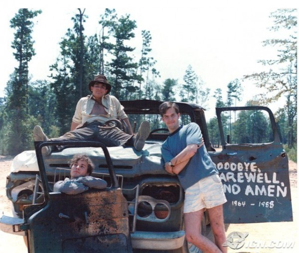
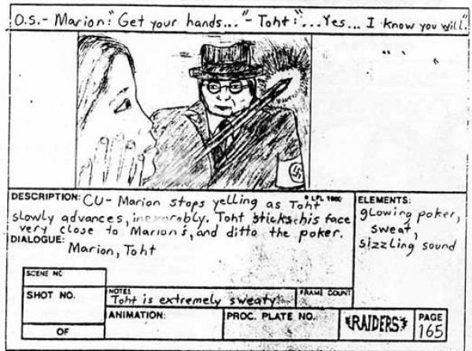

-
When Life Imitates Ark
by Kaye Cain-Nielsen September 15, 2011
It’s summer 1981. London’s heating up with youth race riots, police forces swarm turbulent areas of Yugoslavia. In its infancy, MTV hits American televisions with music videos starring Blondie, Devo, and Pat Benetar, and ABC’s 20/20 airs the first national television coverage of the “rap phenomenon.” Reagan’s tax cuts dominate American policy debate, and MAD Magazine’s Summer Super Special features fourteen irreverent car and home window stickers. That May, Aljean Harmetz of the New York Times predicted Superman II as that summer’s biggest Hollywood blockbuster. Harmetz was dead wrong: the biggest blockbuster of the summer—and to date at the time—turned out to be Steven Spielberg and George Lucas’s Raiders of the Lost Ark. When Americans were introduced to “Indiana Jones – the new hero from the creators of JAWS and STAR WARS,” they couldn’t get enough.
This was particularly true for two kids in Ocean Springs, Mississippi. Eric Zala, then 11, and Chris Strompolos, then 10, rode the same bus to and from their Baptist day school. They had each seen the film once that summer, and had subsequently bought up all of the comic books, magazine articles, and action figures they could afford on their paperboy salaries. They officially met that fall when Eric borrowed an Indiana Jones comic from Chris one day. Chris invited Eric over to his mother’s house to hang out. This was the beginning of a long friendship for the two. They got to know each other over the course of summer adventures: all-nighters, trespassing, beer drinking, geeking out, and talking about girls. Like all friends, the boys hit their rough patches—Chris, more charming and outgoing than type-A Zala, once took Eric’s girlfriend out for a salad. They didn’t talk for a year. But now, in midlife, they have a solid friendship to look back on. A fairly typical story, right?
There’s a major chunk missing. Let’s revisit the initial meeting: Chris invited Eric over to his mother’s house to hang out. I recall some of my own more inspired play dates resulting in day-long fort building projects, diorama building, plays, even small films. They had nothing on this one; this was a hangout session of epic proportions. Chris and Eric were doing a remake of Raiders of the Lost Ark. [Under the impression that Eric knew a ton about filmmaking, Chris invited him to come over. Under a similarly misinformed impression that Chris had already done the sets, cast the characters, and he could just walk on and help, Eric agreed.] Something about Indiana Jones had struck deep chords in each youngster that summer, and Chris and Eric wanted to re-create their fantasy world on film. As it happens, the boys had something else in common besides their love for Indiana Jones. In Harrison Ford, the boys each found a present, manly role-model to stand in for their absent fathers. In more ways than one, Chris and Eric found a hero in Indiana Jones.
But little did either boy know that Raiders would come to consume their entire adolescence. To be more precise, a harebrained idea transformed into a seven-year film project for the boys. That fall, the boys started drawing up storyboards for the film, largely from memory. This was even before you could rent a VHS of Raiders from Blockbuster, much less illegally download it for free in ten minutes on your laptop. Over the course of their tween and teenage years, from 1982-1989, the two boys remade the entirety of the film, shot for shot. Of course, Chris and Eric didn’t do it all alone. They enlisted fellow Mississippi outcast and classmate Jayson Lamb, who created some truly awe-inspiring makeup and special effects over the course of filming. Just about every kid in the county seat appeared in the film as an extra: either mustachioed, turbaned, equipped with fake guns or sometimes, in the case of Zala’s ten year old brother cutely spicing up the dull “university” scenes with his elbow patched tweed jacket and sprayed-on gray hair. Even the Zala family dog Snickers took a starring role, replacing the allegiance-switching spider monkey from the original film. And Zala’s mom appears in the film credits as “transportation” and is profusely thanked for the use and near destruction of her home.
Thirty years after Raiders (the original) screened, Brooklyn’s Union Docs — a non-profit devoted to non-fiction film exhibition, pedagogy, and discourse — screened Eric Zala and Chris Strompolos’s brilliant, charming, cheer-worthy Raiders of the Lost Ark: The Remake. Part of Northside Film Festival 2011, and screened as a kick-off for Union Docs’ documentary short competition, The Remake was officially out of competition with other documentaries. Which is just as well, as it likely would have blown everything else out of the water. Walking into the tiny space one evening in mid-June, the excitement was palpable. Two humming, white Lasko box fans perched next to two wooden speakers of similar size framed the stage. About thirty squeaky folding chairs and a couple of lightly cushioned side benches quickly filled with diverse enthusiasts clutching their sweaty Miller High Lives. Some even sat on the floor, including New York film commissioner Pat Swinney Kauffman, who arrived with Larry Kaufman mid-screening (in time for a little self-promotion by the latter, who writes on the absurdity of copyright laws and in defense of an expanded creative commons, following the screening).
Union Docs’ programmer Steve Holmgren took the tiny stage, and addressed the assembled crowd. For several years, he explained, he’s been trying to bring Raiders to Brooklyn. He spoke with the unabashed, gleaming pride of a new parent. Next, the “boys” – now in their late thirties, ran up to the stage. Clad in baggy jeans and tennis shoes, the beaming duo thanked the crowd and Union Docs. Chris, who starred in the remake, has grown a thickness of long, black hair since his days—or years, rather—as Indy. “This film consumed our entire childhood,” he remarked. He ensured us that the video we were about to see had been unchanged since 1989, when it was first screened in an old Coca-Cola plant back in Mississippi. Even the original misspelling, “Steven Spielburg,” was left as-is in the opening ode to the film’s creators.
For added authenticity, the film was screened off the original VHS. As Strompolos apologetically promised, the picture and sound quality suffered enormously over the years. Before the film started, a trailer for the documentary Buck and especially some corporate sponsorship from AT&T rudely juxtaposed with the blue screen and DOS-font “audio in” that directly precedes Raiders of the Lost Ark: The Remake. The VHS buzz set in, and an over-serious, almost Biblically inspired scrolling white text on black screen announced the boys’ passion for Lucas, “Spielburg,” and Lawrence Kashdan, the three men “to whom we give our thanks for the work they have wrought which has left a permanent impression upon the direction of our lives.” Indeed.
Then came the film itself. It opens, just like the original, with Indy and his men traipsing through the Peruvian jungle (aka backyard of Eric’s mom’s house in Mississippi). The color is washed out, the costumes undoubtedly began as Boy Scout shirts and slacks, and the “natives” are all blonde. But, by god, the shots looks just like the original. In the spirit of good film geekery, if you watch the clip of the film on You Tube you can read comments like: “pretty cool! But you screwed up where Indy pulls the whip off the log. In the movie he tucks it behind a rock in the wall. That’s how Satipo gets across before him when they are escaping. Besides that, very good job!” Well, I was impressed. When that first shocking dead man covered in blood appears on screen, I was actually amazed by the makeup job. Jayson Lamb, who now works in Hollywood, had some great tricks up his teenage sleeves.
Chris does a bang-up job as swashbuckling Indy, using all of his teenage might to muster the cool, man’s man 1980s-notsalgiac-for-1930s hero. And soon we meet Zala in a deadpan, villainous Belloq. Chris’s Marion was recruited in a ballsy move—she was older, she was beautiful, she was an acquaintance from church. That she said yes gave Chris more fuel for his Indy swagger.
Due to the poor sound (recorded by Eric’s clunky camcorder, a birthday present) and years of wear, you can barely hear the lines being delivered. But the kids’ acting is so earnest, so decidedly “uncute,” and the effort so complete and impressive that although the final effect is laugh out loud funny, it’s also an undeniably enjoyable piece. When Indy kisses Marion, Chris was having his fist real kiss. When he’s being dragged under a truck, he may have actually been afraid for his life. That truck, however, was not operational. I learned it took 76 shots and two towing vehicles to make the truck move. Many, many highlights exist, not the least of which are watching characters grow up from child to teenager and, on occasion, hearing voices change mid-scene. When the scene changes from the jungle to Indy’s classroom, the pan of students bored at their desks is so believable (because that’s what those kids did for their day jobs) then and so deliciously ’80s (side ponytails, acid wash, scrunchies). And the stop-animated red line over a map showing the progress of Indy’s flight from the states to the jungle, an added DIY bonus.
As the film progressed, I was impressed by a number of details. Eric Zala hadn’t let a single thing go without second consideration. The real Rolls Royce and the plane they used to “travel” back to the jungle must have taken some serious dedication and string-pulling to incorporate into the film, for one. And the first bar scene in Peru was striking for two reasons: those kids were very believable drunks, and the pyrotechnics involved once the Nazis showed up looked seriously risky and actually, quite realistic on film. I later learned that this scene nearly burned down Zala’s mom’s house, temporarily suspending the filming one summer. After a parent conference, the boys were allowed to resume on the condition they had an adult “chaperone” present during filming. According to Zala and Strompolos, the guy picked for the job was “super chill,” (read: stoned) allowing some life-threatening, extremely dedicated experimentation to continue.
The screening audience broke into multiple, spontaneous bursts of applause throughout the entire film. Far more engrossed than I expected, I waited longer than I usually would during a movie to use the restroom for fear of missing a gem. Despite its general bumpiness, its $2,000 budget and the fact that every prop was homemade, it is a quality piece of filmmaking, and the love that drove it into existence shines as bright as the gold spray paint on the ark of the covenant. In this case, even the most “immature” cinema has a totally transcendent quality. Eli Roth, Hollywood producer, recognized this immediately when he got a hold of a bootlegged copy of the tape, passed through several hands since Zala gave a roommate at NYU film school a copy. When the remake screened at Austin, TX’s Butt-Numb-A-Thon film festival, it was an instant success. When Spielberg himself saw a copy, he was committed to tracking the “boys” down and sending them personal letters of gratitude. There’s a reason for the film’s appeal that goes beyond the heartfelt dedication lurking behind every instance of low-budget, high-effort fanaticism. Here is an American story of hero-worship, insane work ethic, and tumultuous family life fueling the obsessive pursuit of boyhood dreams (see the 2004 Vanity Fair feature for the too-good-to-be-fiction details). By the way, Zala and Strompolos recently sold their life rights to Scott Rudin.
In a Q and A session following the film, Chris and Eric (mostly Chris, our Indy) incredulously told their own story. Here were two men in their mid-thirties, still film geeks, still visibly excited and slightly confounded about the work they did as teenagers. They owned up to everything, were delightful, honest, and kind in their responses. I’ve never heard anyone sound so genuinely thankful for their audience. As my crowd streamed out and another one anxiously bottlenecked the single entrance for the ten o’clock screening, I seriously considered staying for round two.
During the talk following the film, someone asked about the giant boulder that chases Indy through the temple of doom. As it turns out, the piece of handiwork took five different manifestations. The first when the boys were twelve and thirteen, respectively. Up all night, they’d gotten bamboo from a nearby swamp, constructed a frame with it, and covered this frame in grey painted cardboard. The boulder looked great at dawn through bleary, blood shot eyes. The guys made one devastating oversight: it wouldn’t fit through Zala’s bedroom door. Next up, a chicken wire structure, this time built outside. A hurricane hit that year, and the chicken wire is still somewhere in the Gulf of Mexico. Not to be defeated, Zala saved up and bought a big weather balloon from the back of a comic book. It arrived, they inflated it, and overnight the thing deflated. Finally they got a local shipbuilder to make a perfect plexiglass ball, convinced some lumberyard workers to deliver two unfinished telephone wire poles to Eric’s mom’s house on a semi.The scene is one of the best-looking in the film, despite/because of the fact that the cave was, like all other indoor scenes, constructed in Eric’s mom’s basement.
The film has been deemed “the ultimate fanboy flick,” but I think it’s much more than that. So earnest a labor of love is rarely found in today’s hordes of remixes, You Tube remakes, spoofs, and recreations. I’m not saying it couldn’t happen now, but the fact that it did when it did, before the internet, before appropriation and remixing became the dominant techniques of cultural production, is precisely what makes it so delightful. For Stromopolos, who needed to be Indiana Jones, and for Zala, who needed to create a fantasy world he could better control, what they made, or rather lived, became an authentic experience. What I saw at UnionDocs was, after all, an entire childhood recorded on VHS. Zala said he still wakes up with nightmares about imperfect scenes, and Chris claimed that it took years to un-train himself to think of every person, car, object, or sound he encountered in the world as a potential ally for their project. Someone in the audience asked about the experience of watching Raiders of the Lost Ark, the original. “When we see the original,” Strompolos laughed, “it’s like seeing a high-budget remake of our film.”